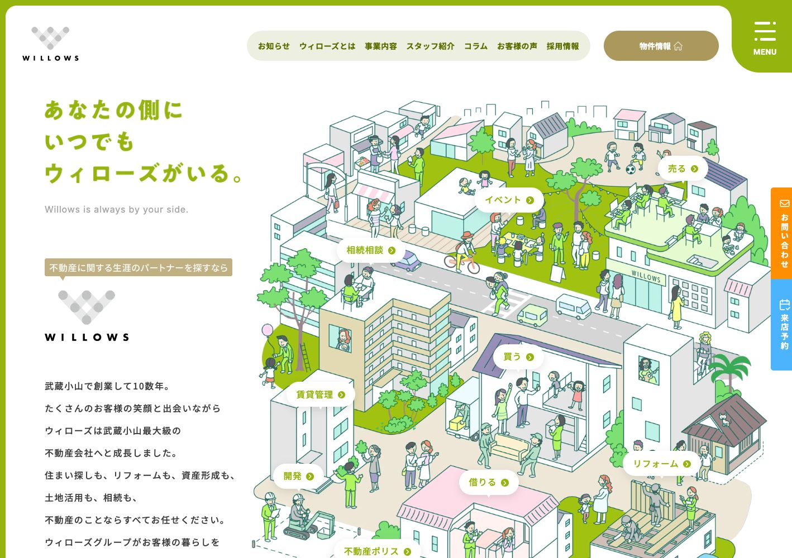
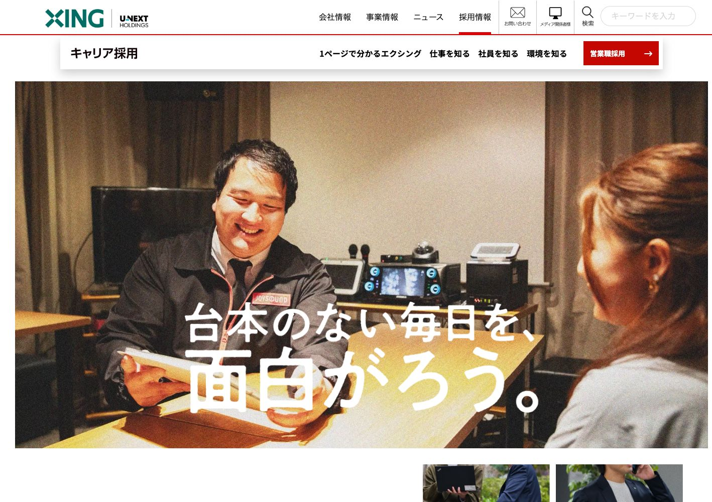
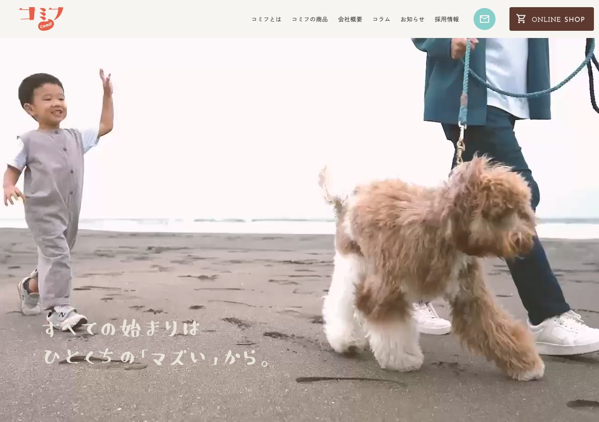
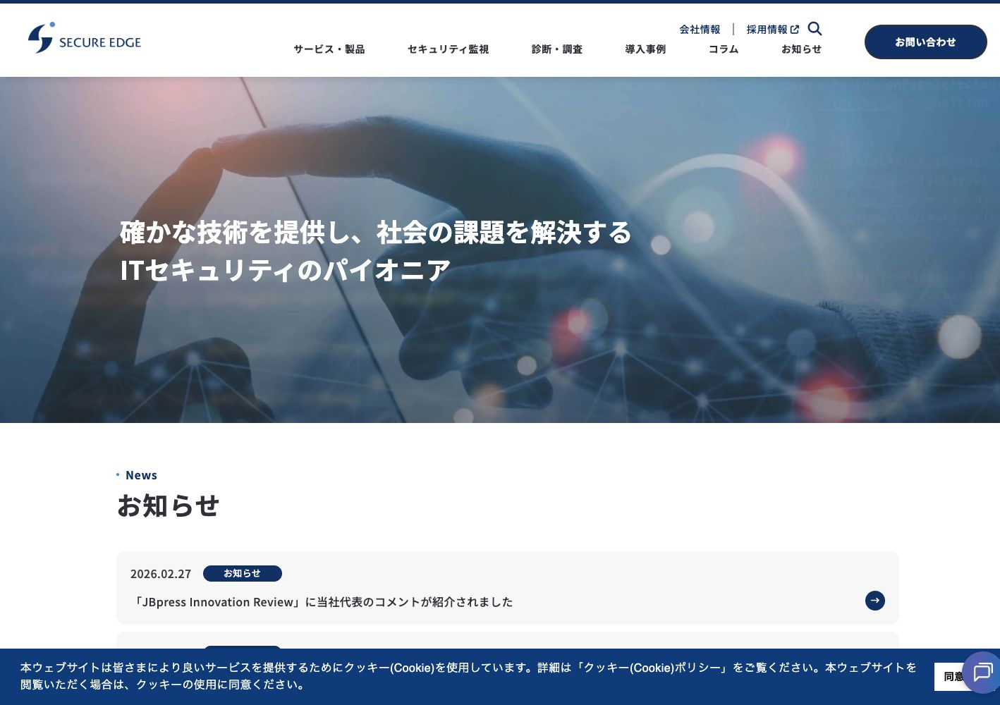

// FRONT-END ENGINEER & CODER
意図を汲み、
コードで応える。
池田 智敦 フロントエンドエンジニア / Webコーダー
実務経験5年。強みは、コーディングのスピード。
全ページの実装からWordPress構築まで対応します。
// From design to experience.
const approach = {
speed: "スピーディーに実装",
layout: "どの画面でも心地よく",
code: "読みやすく、育てやすく"
};
function build(design) {
return design.bringToLife(approach);
}01 / Selected work
Web制作・コーディング実績これまでに100件以上のWeb制作に参画してきました。その中から、代表的な4件の実績をご紹介します。

VISIT WEBSITE ↗Willows
株式会社ウィローズ
住まいと暮らしを支える、不動産会社のコーポレートサイト。
担当 全ページのコーディング・WordPress実装

VISIT WEBSITE ↗株式会社エクシング / キャリア採用
JOYSOUNDを支える仕事と人を伝える、キャリア採用サイト。
担当 全ページのコーディング・WordPress実装

VISIT WEBSITE ↗comif
株式会社ホットドッグ / コミフ
愛犬と楽しむスイーツ＆デリ「コミフ」のブランドサイト。
担当 全ページのコーディング・WordPress実装

VISIT WEBSITE ↗SecureEdge
セキュアエッジ株式会社
セキュリティ製品とサービスを紹介するコーポレートサイト。
担当 全ページのコーディング・WordPress実装
Web制作の実務経験
スピードを強みに、
実装から、運用のしやすさまで。
池田 智敦フロントエンドエンジニア / Webコーダー
Web制作の実務経験は5年。コーディングスピードを強みに、全ページのコーディングからWordPressの実装まで一貫して対応しています。
HTML・CSS・JavaScript・PHPは、それぞれ5年以上の実務経験があり、高度な実装にも対応可能です。見た目の再現だけでなく、更新する方にとって使いやすい管理画面づくりにも取り組んでいます。
実務経験 5年以上
基本レベル
WordPress development
独自テーマの構築から、案件に合わせた機能の追加・管理画面の最適化まで対応します。
- WordPress独自テーマの構築・実装
- カスタム投稿・カスタムフィールドの実装
- クライアントに合わせた管理画面のカスタマイズ
- 必要に応じたプラグインの自作
使用経験のある主なプラグイン
次の制作を、一緒に。
Webサイトのコーディング・実装のご相談はこちら。